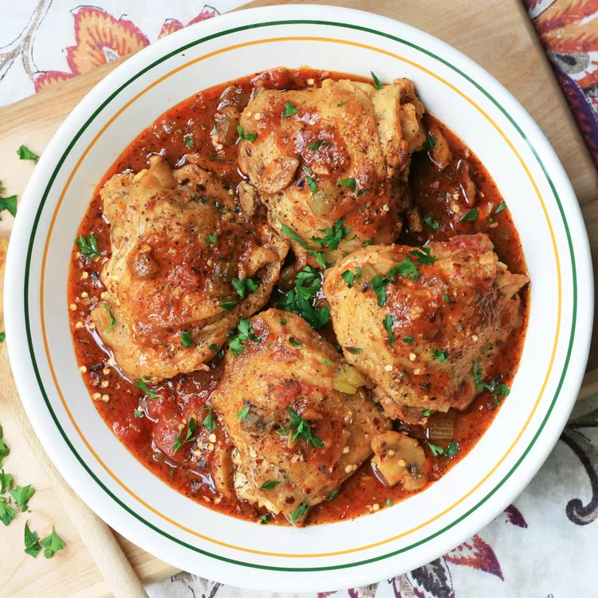

Instant Pot Chicken Cacciatore

Description
This wonderful, traditionally slow-cooked recipe has been translated into a quick and easy pressure cooker meal.
Ingredients
- 4 (6 ounce) bone-in chicken thighs, with skin
- 2 tablespoons olive oil
- 1 (4 ounce) package sliced fresh mushrooms
- 3 stalks celery, chopped
- ½ onion, chopped
- 2 cloves garlic, minced
- 1 (14 ounce) can stewed tomatoes
- 2 tablespoons tomato paste
- 2 teaspoons herbes de Provence
- ¾ cup water
- 3 cubes chicken bouillon, crumbled
- 1 pinch red pepper flakes (Optional)
- 1 pinch ground black pepper to taste (Optional)
Steps
- Rinse chicken thighs and pat dry with paper towels. Heat oil in the pot of an electric pressure cooker (such as Instant Pot) on Sauté mode;
add chicken. Cook until browned, br>about 6 minutes per side. Transfer chicken to a plate, reserving drippings in the pot.
- Place mushrooms, celery, and onion in the pot; cook and stir until soft, about 5 minutes. Add garlic; cook until fragrant, about 2 minutes.
Place chicken back in the pot; add tomatoes and tomato paste. Sprinkle with herbes de Provence. Top with water and bouillon.
- Close and lock the lid. Select high pressure according to manufacturer's instructions. Allow 10 to 15 minutes for pressure to build. Cook for 11 minutes.
- Release pressure carefully using the quick-release method according to manufacturer's instructions,
about 5 minutes. Unlock and remove the lid carefully, turning it away from you. Test chicken for doneness;
an instant-read thermometer inserted near the bone should read 165 degrees F (74 degrees C). Season to taste with red pepper flakes and black pepper.
Tips
If a thicker sauce is desired, remove chicken and bring sauce to a boil on Sauté mode. Cook until reduced and thickened.